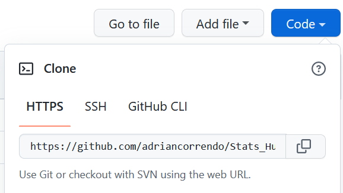
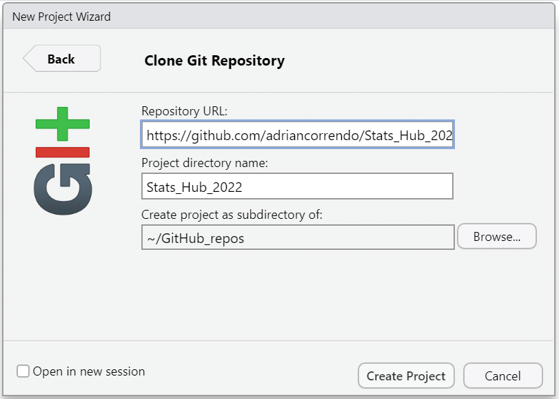

Week #1
Introduction to GitHub and Quarto
This contains notes about the introductory meeting, intended to:
Review on the use of GitHub for collaborative projects.
Explore the new features offered by the new development of RStudio: Quarto.
 What is GitHub?
What is GitHub?
GitHub is an internet hosting service designed for software development and version control using Git. Basically, GitHub facilitates to work in a collaborative manner through multiple features designed to efficiently control changes made by users during a working session.
Useful desktop applications:
Key glossary:
| # | Concept | Description |
|---|---|---|
| 1 | version control | is the practice of tracking and managing changes to software code |
| 2 | repository | is a code hosting platform for version control and collaboration. |
| 3 | branch | is a unique set of code changes with a unique name. |
| 5 | clone | is to copy a remote repository into your local |
| 4 | remote/local | they are Git repositories hosting code at different locations. “Remote” means located on the internet or another network. “Local” means located in your machine. |
| 5 | origin | is the remote version of a given repository. |
| 6 | main/master | is the name of the default branch. In the past “master” was the default. Since 2020, “main” is the default name of all new source code. |
| 7 | commit | is a “revision” or individual set of changes to a file or group of files within a branch. |
| 8 | pull / fetch | is the action to fetch and download content from a remote repository to update your local repository. |
| 9 | push | is the action to upload content from a local repository to update its remote version (all within a given branch). |
| 10 | pull request | is to let the repository owner to know about changes you’ve made to his code pushing to a new named branch. It allows to discuss, review, accept/reject the changes, and eventually accept and merge your branch to update the old version (normally, the “main” branch). Note: This action allows users to appear into the “contributors” list of a repository. |
| 11 | merge | is the action of combining two branches into one, and putting a combined “forked history”. |
| 12 | rebase | is moving or combining a sequence of commits to a new base commit. |
| 13 | fast-forward | is merging when there is a direct linear path from the source branch (updating from) to the target branch (the one updating to). |
| 14 | stash* | it temporarily shelves changes you’ve made to your copy so you can work on something else, and then come back and re-apply them later. *very useful when you need to pull and update from the remote but you have been working on your local file. |
| 15 | revert | is the “undo” action to safely undoing changes. It creates a new commit that inverses changes. |
| 16 | fork | is to copy others’ repository into your account. Your forked repo will act as an independent branch, so you can commit changes and put pull request from the forked repo. |
| 17 | Issues | is a section of any GitHub repository that allows to track issues experienced by users. Particularly useful for packages. Issues can be quoted and linked to pull requests. |
| 18 | PATs | stands for Personal Access Tokens, which are an alternative authentication method to passwords and SSH |
| 19 | lfs | the lfs stands for Large File Storage. It allows you to track heavy files that are not allowed by default. |
| 20 | GitHub Actions | is the way to automate continuous integration and delivery (CI/CD). Particularly, CI is a very important a software practice for package development, since it allows to detect errors on different operative systems via multiple automated tests. |
What is Quarto?
Quarto is an open-source scientific and technical publishing system built on Pandoc. It allows to combine R, Python, Julia, and Java (Observable JS) for the design of reports, applications, websites, blogs, scientific publications, and more...
Key concepts to review:
qmd
render
yml
css
Learn more: https://quarto.org
Installing Quarto
Today’s exercise
Today, we will work together on the creation of our own hex-sticker using both Quarto and GitHub.
Steps
Clone a repository:
Open your web-browser and go to https://github.com/adriancorrendo/Stats_Hub_2022
Fork to your own GitHub account.
Go to your forked repo and click on the “Code” button and copy the https address

Open Rstudio and go to File > New Project… > version control > Git, and paste the link.

Go to the logo > code and open the hexsticker_stats_hub.qmd file.
Install the required packages.
Modify the logos or create an alternative using the *.qmd file.
Create a commit. with your changes.
Push (send changes).
Contribute with a Pull Request.
Wait for the PR to be merged into the original repo.